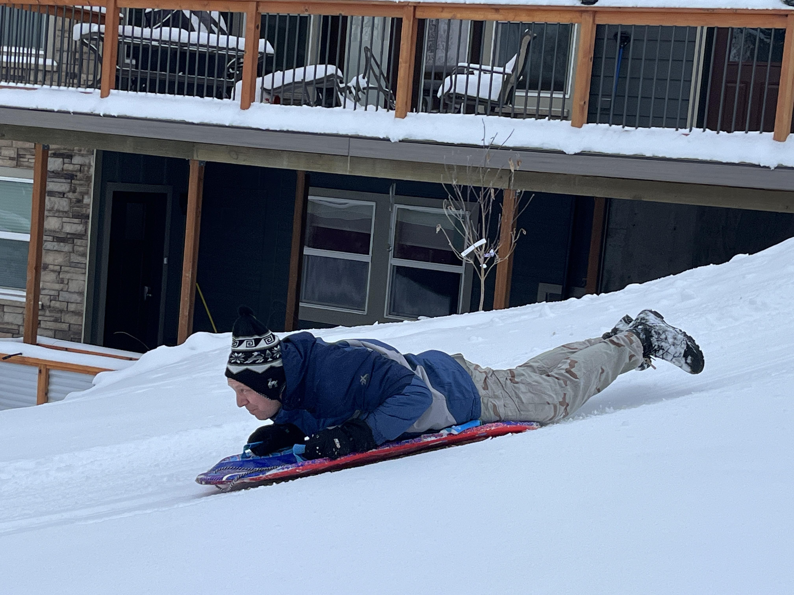
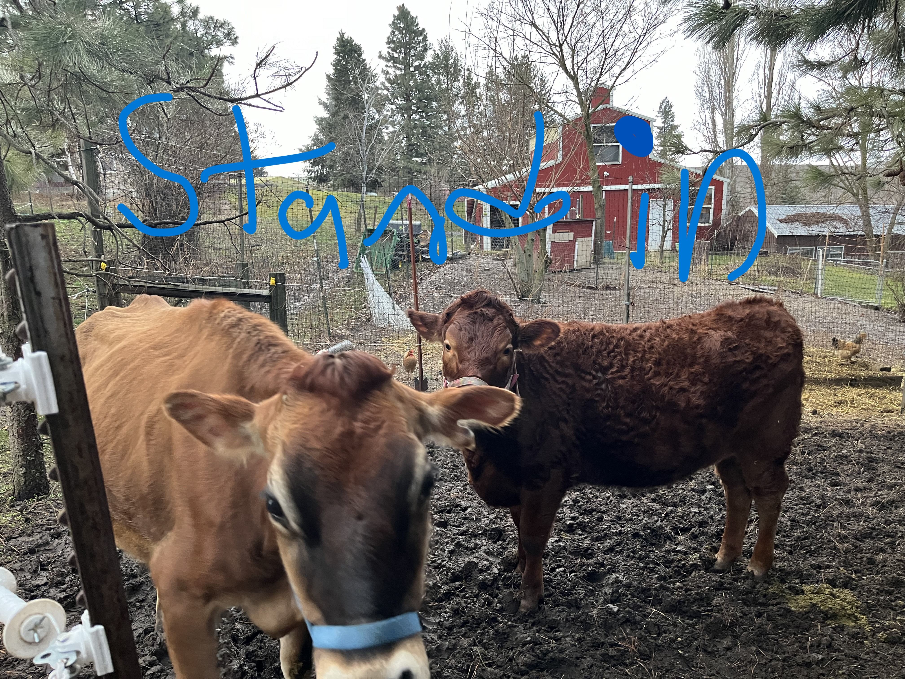

Meet The Milkers!

Megan top dog some would title her the fastest milker in the west. Every morning rain or shine she is out in the barn milking Paris. She is the one who works the hardest. Megan milks, makes cheese, mucks the stalls, buys the straw and hay, and runs the farm hands.
Kenneth is the full time farm hand. Due to his other job cannot milk daily but helps on the weekends with the milking and other farm chores. Such as harvesting fruit, repairing the vehicles and milking.
 Rebekah is a summer farm hand and is one of the best milking buddies that Megan has. When needed, Rebekah also helps with farm chores, harvesting produce and filtering the milk.
Nate is a hard working and helpful farm hand who is always willing to help with anything whether it be milking, moving cinder blocks or moving compost. He comes around in the winter. He also uses copious amounts of the butter and eggs produced by the farm to make fancy bread products.
Hazel is the relief farm hand and is always willing to help out when needed.